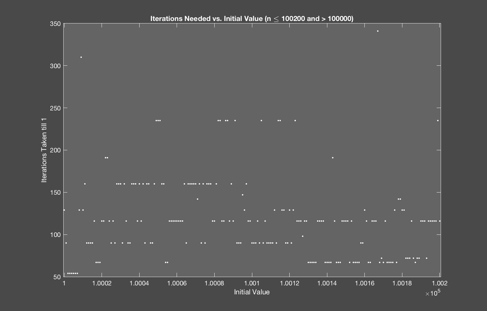
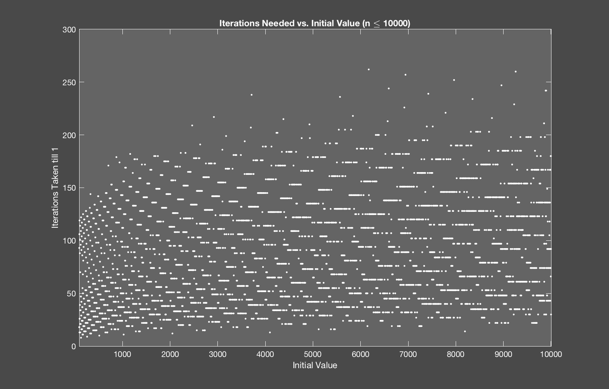
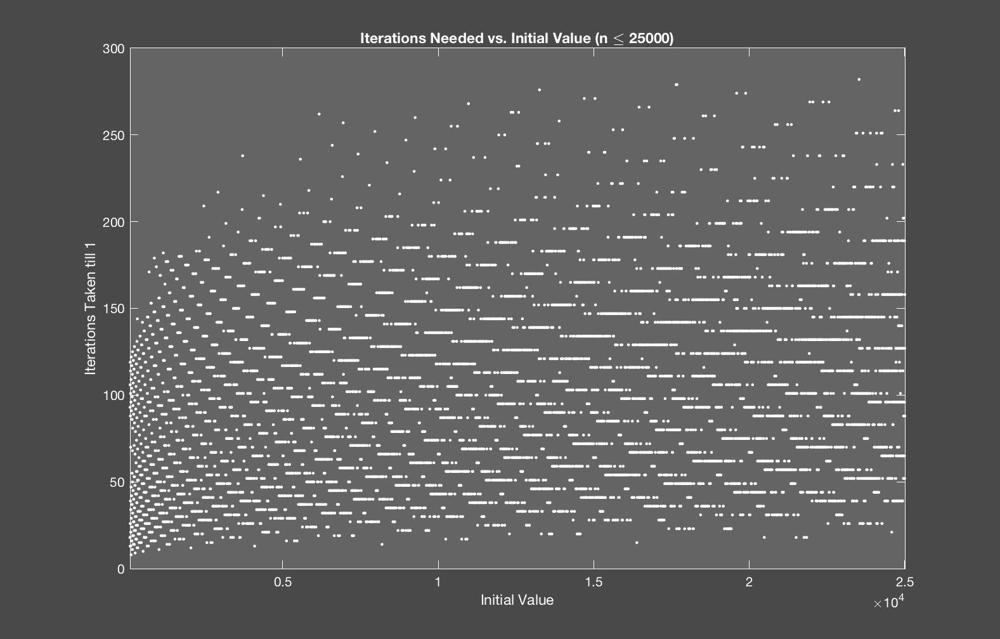

Adventures with the Collatz Conjecture
I don't remember the first time I heard about the Collatz conjecture, but I remember that I was messing around with it during high school calc when I should've probably be paying attention. For those unfamiliar with the premise of the Collatz conjecture, it basically means that no matter what number $n$ you start at, you will eventually reach 1 if you repeatedly half it for any even $n$, and multiply it by 3 and add 1 for any odd $n$. As a function, this could be written out as:
$f(x) = \begin{cases}\frac{n}{2} & \text{if n is even} \\
3n + 1 & \text{if n is odd} \\
\end{cases}$
So here I was, sitting in calc class, putting one number in each square in my graph paper, using my calculator to help me out as I went. I ended up reaching around 40 before getting too bored with it, but I found a pattern in the sequence before then.
Let's look at the Collatz trajectories for the initial values $n=\{28,29,30\}$.
$28\rightarrow 14 \rightarrow 7 \rightarrow 22 \rightarrow 11 \rightarrow 34 \rightarrow 17 \rightarrow 52 \rightarrow 26 \rightarrow 13 \rightarrow 40 \rightarrow 20 \rightarrow 10 \rightarrow 5 \rightarrow 16 \rightarrow 8 \rightarrow 4 \rightarrow 2 \rightarrow 1$
$29 \rightarrow 88 \rightarrow 44 \rightarrow 22 \rightarrow 11 \rightarrow 34 \rightarrow 52 \rightarrow 26 \rightarrow 13 \rightarrow 40 \rightarrow 20 \rightarrow 10 \rightarrow 5 \rightarrow 16 \rightarrow 8 \rightarrow 4 \rightarrow 2 \rightarrow 1$
$30 \rightarrow 15 \rightarrow 46 \rightarrow 23 \rightarrow 70 \rightarrow 35 \rightarrow 106 \rightarrow 53 \rightarrow 160 \rightarrow 80 \rightarrow 40 \rightarrow 20 \rightarrow 10 \rightarrow 5 \rightarrow 16 \rightarrow 8 \rightarrow 4 \rightarrow 2 \rightarrow 1$


